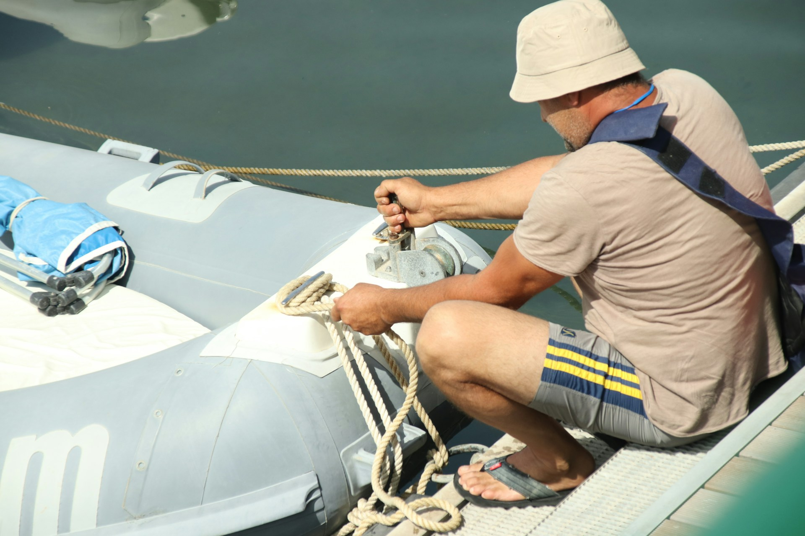

Fiberglas onarımından ahşap renovasyonuna, profesyonel boyadan kışlatmaya — teknenizi yeniden suya layık hale getiriyoruz.
Fiberglas, ahşap veya alüminyum — hangi malzeme olursa olsun, teknenizin ihtiyacına göre doğru çözümü üretiyoruz.
Çarpma, çatlak ve kırıklardan osmoz tedavisine kadar tüm fiberglas onarımları.
Klasik ahşap teknelerde özgün dokuyu koruyarak kapsamlı restorasyon ve yenileme.
Antifouling, dış cephe boyası ve özel renk uygulamalarıyla teknenize yeni bir kimlik.
Yeni teak güverte döşeme, eski teak yenileme ve profesyonel teak bakımı.
Teknenizin iç mekânını konfor ve estetik açısından baştan tasarlıyoruz.
Sezonu güvenle kapatmak için karaya çekme, tekne yıkama ve kış muhafazası.
İşimizi sözümüzle değil, sonuçlarımızla anlatıyoruz.

2009'dan bu yana yüzlerce tekne sahibinin güvenini kazandık. Referanslarla büyüdük — çünkü işimizi sözümüzle değil, sonuçlarımızla anlatıyoruz.
Her proje için ayrı bir değerlendirme yapıyor, teknenizin tarihini ve özelliklerini anlayarak çalışıyoruz. Fiberglas, ahşap veya karma malzeme fark etmez — her sistemde uzman ekibimiz var.
İstanbul marinaları ve Ege kıyılarında yerinde keşif ve servis. Bölgenizi seçin, size en yakın çözümü sunalım.
Tuzla, Pendik, Ataköy ve Kalamış marinalarında yerinde keşif ve servis.
Yalıkavak, Turgutreis ve Milta Bodrum Marina çevresinde tekne servisi.
D-Marin, Club Marina ve Marinturk çevresinde yat bakım ve refit.
Netsel Marina ve Yat Marin çevresinde tekne tamiri ve bakımı.
Ece Marina ve Fethiye körfezinde tekne servisi ve refit.
Tuzla tersaneler bölgesi ve marina çevresinde çekek, boya ve onarım.
Çeşme Marina ve Alaçatı çevresinde tekne bakım ve onarımı.
Yalıkavak Marina çevresinde yat bakım, refit ve teak işleri.
Pendik Marina ve çevresinde tekne tamiri, boya ve bakım.
Ataköy Marina çevresinde tekne bakım, boya ve onarım.
Kalamış ve Fenerbahçe Marina çevresinde tekne servisi.
Urla, Sığacık ve İzmir körfezinde tekne bakım ve onarımı.
D-Marin Didim çevresinde tekne bakım, boya ve onarımı.
Ayvalık ve Setur Ayvalık Marina çevresinde tekne servisi.
Datça ve çevresindeki koylarda tekne bakım ve onarımı.
Antalya marinaları çevresinde tekne bakım, boya ve onarımı.
Kaş ve çevresindeki koylarda tekne bakım ve onarımı.
Kuşadası Setur Marina çevresinde tekne bakım ve onarımı.
Mudanya ve Marmara kıyısında tekne bakım ve onarımı.
Şeffaf süreç, net fiyatlar, sürpriz yok. Keşiften teslime kadar her aşamada yanınızdayız.
Formu doldurun veya WhatsApp'tan yazın. 24 saat içinde dönerek uygun randevuyu ayarlıyoruz.
Ustamız teknenizi yerinde inceleyerek kapsamlı bir durum değerlendirmesi yapar.
48 saat içinde kalemlerin ayrı ayrı belirtildiği, sürprizsiz yazılı fiyat teklifini sunuyoruz.
Belirlenen takvimde çalışmalar başlar; sizi adım adım bilgilendirerek teknenizi teslim ederiz.
2003 model fiberglas teknem ciddi osmoz hasarı almıştı. Ekip tedaviyi mükemmel yaptı, teknem şu an sıfır gibi. Fiyat-kalite dengesi için kesinlikle tavsiye ederim.
1970 yapımı ahşap teknemin restorasyonunu güvenle verebileceğim bir yer arıyordum. İşin bitişinde ağzım açık kaldı — tarihi dokuyu tamamen korudular.
Her sene kışlatma ve bakımı burada yaptırıyorum. İletişimleri kusursuz, söz verdikleri tarihe yüzde yüz sadık kalıyorlar.
Ustalarımız teknenizi yerinde inceleyerek ihtiyacınızı doğru analiz eder. Hiçbir yükümlülük olmadan.
Teklif Talebini GönderinFormu doldurun, WhatsApp'tan hemen görüşmeye başlayalım.
24 saat içinde ustamız sizi arayacak. Teşekkür ederiz.